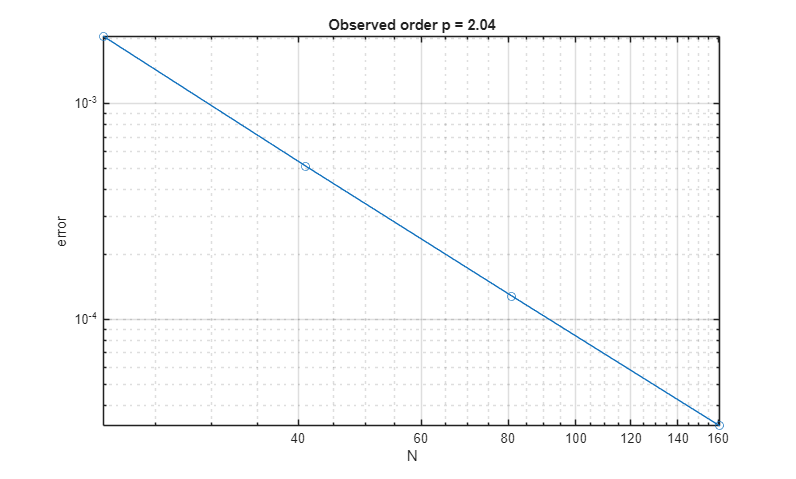
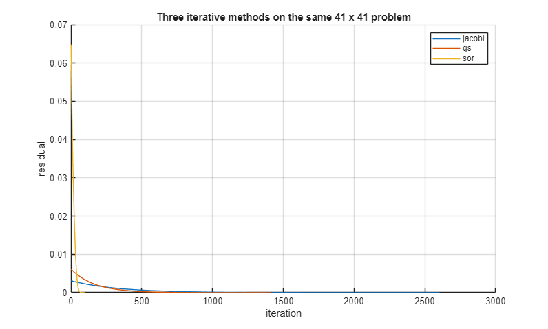
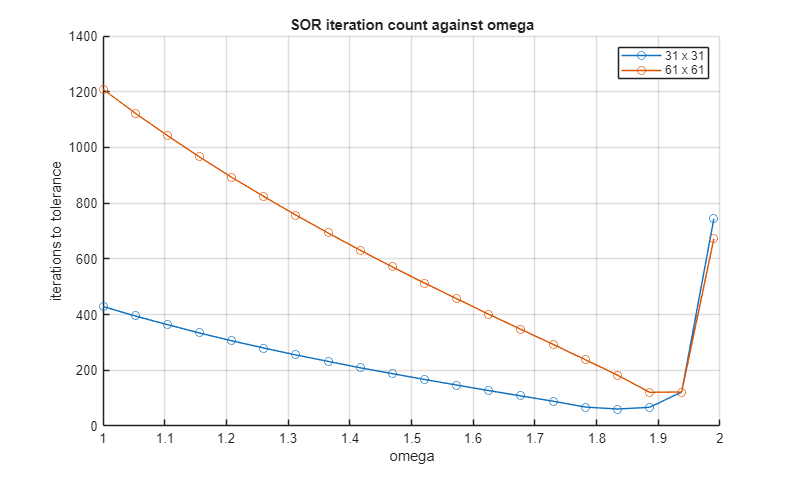
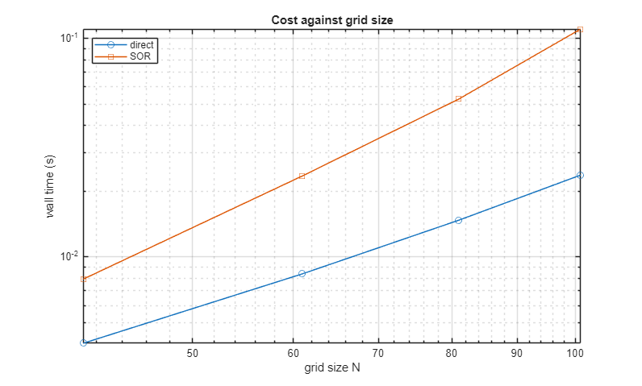

EECE 306 Lab 7 notebook. Writing Your Own Poisson Solver
Team 8. Thalea Collymore, Kroix Jones, Xavier Moore
Contents
Setup
clear; close all;
e0 = em.const.eps0();
Vex = @(X,Y) sin(pi*X).*sin(pi*Y);
rho = em.test.mms2d(Vex, 1);
Manufactured solution and convergence
n = 101; G = em.solve.grid2d([0 1], [0 1], n, n); mask = false(n,n); mask([1 end],:) = true; mask(:,[1 end]) = true; V = em.solve.poisson2d(G, rho, 1, mask, zeros(n,n), ... struct('method','direct')); err101 = max(abs(V(:) - Vex(G.X(:),G.Y(:)))); fprintf('MMS max error on the 101 x 101 grid = %.3e\n', err101); Ns = [21 41 81 161]'; errs = zeros(size(Ns)); for j = 1:numel(Ns) n = Ns(j); Gn = em.solve.grid2d([0 1], [0 1], n, n); mk = false(n,n); mk([1 end],:) = true; mk(:,[1 end]) = true; Vn = em.solve.poisson2d(Gn, rho, 1, mk, zeros(n,n), ... struct('method','direct')); errs(j) = max(abs(Vn(:) - Vex(Gn.X(:),Gn.Y(:)))); end disp(table(Ns, errs, 'VariableNames', {'N','MaxError'})); p = em.test.convergence(@(N) errs(Ns == N), Ns); fprintf('observed order p = %.2f\n', p);
MMS max error on the 101 x 101 grid = 8.224e-05
N MaxError
___ __________
21 0.0020587
41 0.00051419
81 0.00012851
161 3.2116e-05
observed order p = 2.04

Three iterative methods
n = 41;
G = em.solve.grid2d([0 1], [0 1], n, n);
mask = false(n,n);
mask([1 end],:) = true;
mask(:,[1 end]) = true;
methods = {'jacobi','gs','sor'};
figure;
hold on
for k = 1:3
opts = struct('method',methods{k}, ...
'tol',1e-6,'maxit',20000);
if strcmp(methods{k},'sor')
opts.omega = 2/(1+sin(pi/(n-1)));
end
[~,info] = em.solve.poisson2d(G, rho, 1, mask, ...
zeros(n,n), opts);
semilogy(info.resHist)
fprintf('%-7s iterations = %d\n', ...
methods{k}, info.iter);
end
grid on
legend(methods)
xlabel('iteration')
ylabel('residual')
title('Three iterative methods on the same 41 x 41 problem')
jacobi iterations = 2604 gs iterations = 1415 sor iterations = 102

Omega scan on two grids
figure; hold on for n = [31 61] G = em.solve.grid2d([0 1], [0 1], n, n); mask = false(n,n); mask([1 end],:) = true; mask(:,[1 end]) = true; omega = linspace(1.0,1.99,20); iterations = zeros(size(omega)); for j = 1:numel(omega) [~,info] = em.solve.poisson2d(G, rho, 1, mask, ... zeros(n,n), ... struct('method','sor','tol',1e-4, ... 'maxit',20000,'omega',omega(j))); iterations(j) = info.iter; end plot(omega,iterations,'o-') [~,best] = min(iterations); fprintf('n = %d best omega about %.2f\n', ... n, omega(best)); end grid on legend('31 x 31','61 x 61') xlabel('omega') ylabel('iterations to tolerance') title('SOR iteration count against omega')
n = 31 best omega about 1.83 n = 61 best omega about 1.89

Timing, iterative against direct
Nt = [41 61 81 101]; td = zeros(size(Nt)); ts = zeros(size(Nt)); for k = 1:numel(Nt) n = Nt(k); G = em.solve.grid2d([0 1], [0 1], n, n); mask = false(n,n); mask([1 end],:) = true; mask(:,[1 end]) = true; tic em.solve.poisson2d(G, rho, 1, mask, zeros(n,n), ... struct('method','direct')); td(k) = toc; tic em.solve.poisson2d(G, rho, 1, mask, zeros(n,n), ... struct('method','sor','tol',1e-6, ... 'maxit',40000, ... 'omega',2/(1+sin(pi/(n-1))))); ts(k) = toc; fprintf('N = %d direct %.3f s SOR %.3f s\n', ... n, td(k), ts(k)); end figure; loglog(Nt,td,'o-',Nt,ts,'s-'); grid on xlabel('grid size N') ylabel('wall time (s)') legend('direct','SOR','location','northwest') title('Cost against grid size') crossIdx = find(ts < td,1); if isempty(crossIdx) fprintf('No timing crossover was observed through N = %d.\n', ... Nt(end)); else fprintf('First observed timing crossover is near N = %d.\n', ... Nt(crossIdx)); end
N = 41 direct 0.004 s SOR 0.008 s N = 61 direct 0.008 s SOR 0.023 s N = 81 direct 0.015 s SOR 0.053 s N = 101 direct 0.024 s SOR 0.111 s No timing crossover was observed through N = 101.

Interpretation
The manufactured solution converged at about second order, which matches the five-point stencil. If the measured order had been closer to one, the first things to check would be the boundary indexing and the Neumann boundary conditions. Gauss-Seidel needed fewer sweeps than Jacobi, while SOR was faster when omega was chosen near its best value. The best omega changed as the grid became finer, showing that one value does not work best for every grid.
Problems encountered
One problem we ran into was handling the zero-derivative boundary. At first, a missing neighbor outside the grid was replaced with the boundary node itself. The solution still looked smooth, so the mistake was not obvious. We corrected it by mirroring the interior neighbor across the boundary, which gives the centered zero-derivative condition required by the solver.
Full test suite
runTests
close all
EECE 306 toolbox test suite -------------------------------------------------------------- eta = 376.7303 test_lab01 checks complete PASS test_lab01 0.02 s test_lab02 checks complete PASS test_lab02 0.02 s 5000-point field evaluation: 0.0004 s test_lab03 checks complete PASS test_lab03 0.02 s test_lab04 checks complete PASS test_lab04 0.05 s merged source: flux 5.00000000e-09 C, enclosed 5.00000000e-09 C density errors at 128000 / 1024000 elements: 0.953% / 1.715% max sphere / cube / closed hemisphere: 3.00000000e-09 / 3.00000000e-09 / 3.00000000e-09 C sphere Gauss rel err 1.44e-11; midpoint N=960 rel err 4.46e-07 test_lab05 checks complete PASS test_lab05 2.53 s Lab 6: max absolute map error 7.776e-04 V/m max closed residual / (max|E| L) 2.473e-13 Square vs exact-tangent edges 4.178e-11 V open midpoint errors [0.0004329 0.0001082 2.706e-05 6.764e-06] V (order 2) Fixed line refinement 4.965e-06 V growing line potentials 25.9495 -> 37.6527 V warning verified Step minimum h=3.162e-06 m, error 1.025e-11 default error 10000 points V/grad 0.001/0.004 s test_lab06 checks complete PASS test_lab06 1.10 s Lab 7: MMS error 8.224e-05, order 2.042 Jacobi / GS / SOR iterations 1320 / 689 / 77 Gauss flux 2.5947e-09 C, enclosed 2.5000e-09 C test_lab07 checks complete PASS test_lab07 0.30 s -------------------------------------------------------------- 7 passed, 0 failed, 7 total All tests passing.